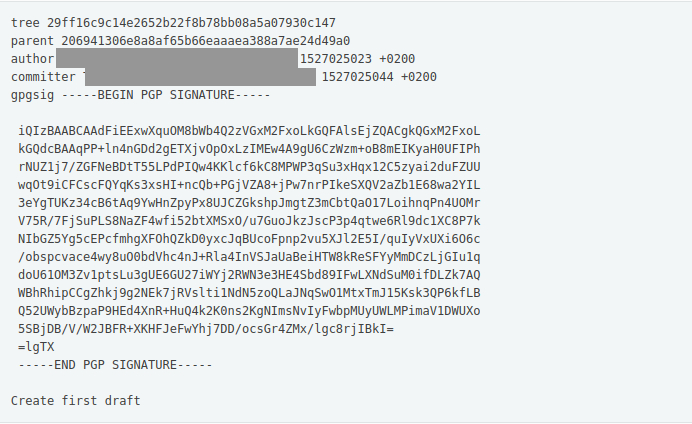
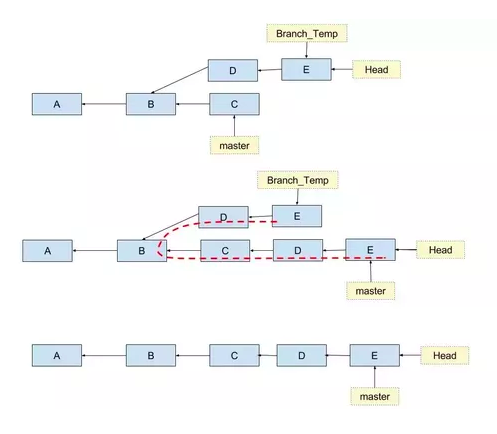

Everything in git is an object. Think of an object as a binary file, with its contents in a specific manner. There are four types of objects in git - blob, commit, tag or tree. We'll mostly deal with the commit object. This is how a commit object looks like -
Now, this object is compressed into a binary file, and the SHA-1 hash of this is computed. The first two characters of the hash is used as the name of the directory and the remaining characters are used as a name to this file which is stored in the directory mentioned.
The .git ( '.' here refers to a hidden directory in unix-like systems) directory which is formed after git init consists of the following repositories (directories or folders) -
All the objects mentioned previously are stored in the .git/objects/ repository or directory.
The parent field in the commit message (actually a key-value; where a ASCII space acts as delimiter) might be more in numbers (in case of a merge commit) or not be present at all (in case of the first commit). This key - parent holds the value of the hash of the previous commit.
We can easily retrieve that using the first two characters as directory path and the remaining characters as the path of the file inside the directory.
Now, git rebase actually rewrites history !
When multiple branches are created in the git working tree, they need to be merged so that the changes are applied to the HEAD (the current instance or commit). Git rebase clears the history of another branch and adds all the commits of the deleted branch to the current branch in a linear manner. This picture might help understand it better -
Rebase means changing the base. So this command changes the base or the parent of the first commit of that specific branch to the latest commit of the current branch.
The actual rebase algorithm has been modified a number of times which brings it to its current state. But we'll consider the original algorithm for simplicity.
Git first identifies a common ancestor of both the branches and starts from there. It takes up the next commit in the branch to be rebased after the common ancestor and cherry-picks it with the latest commit of the current branch. Git cherry-pick is another command which computes the git diff of both the commits and picks the changes that were made and stores them.
In case of rebase, after git cherry-pick is run, the changes are stored in a temporary patch. The patch is then applied over the latest commit of the current branch and a new commit is created with the latest commit of the current branch as its parent. The latest commit is then updated to the newly created commit.
It might seem, on first look, that git simply changes the parent of the commit to be rebased. But as explained in git's architecture section, an object is identified by its contents (SHA-1 hash of its contents). If the contents of an object changes (in this case the parent), then it is entirely a new object. And in this case an entirely new commit.
So, the process of git cherry-pick is done until it reaches the last commit of the branch to be rebased, when it simply points the HEAD to the latest newly created commit.
This original git rebase algorithm has undergone certain subtle changes but the main idea is still the same. To get a complete hang of rebase' current implementation visit the source code of interactive rebase and the original git rebase.